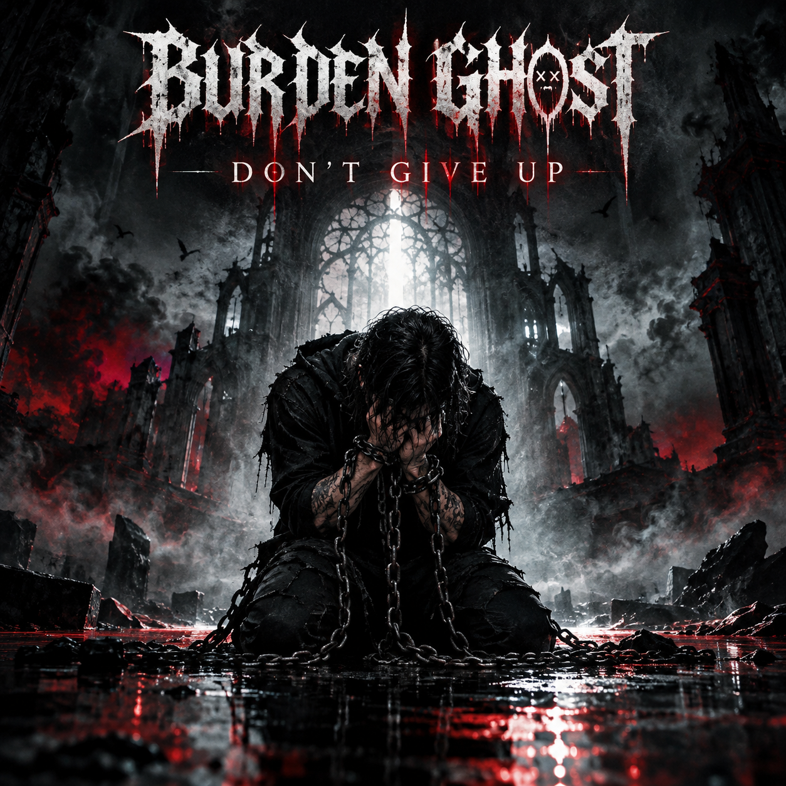

OFFICIAL ALBUM PAGE

BURDEN GHOST · OUT NOVEMBER 28
DON'T GIVE UP
DON'T GIVE UP is the next chapter of BURDEN GHOST, the Salvadoran artist Jonathan Pérez's alternative rap and metal project. Built around struggle, transformation, vulnerability, and the decision to keep moving, the album brings dark atmosphere together with rap cadences and heavy instrumentation.
Release date: November 28. Pre-save the album now so it’s ready in your music library when it arrives.
Physical product availability, formats, and fulfillment are managed on ElasticStage.